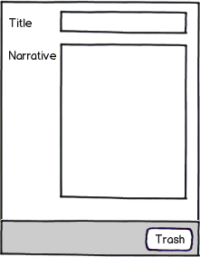
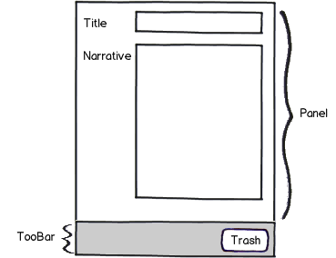
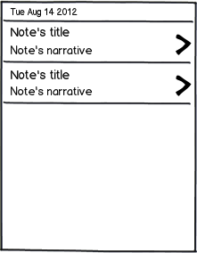
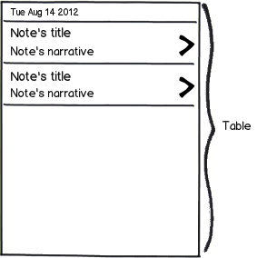
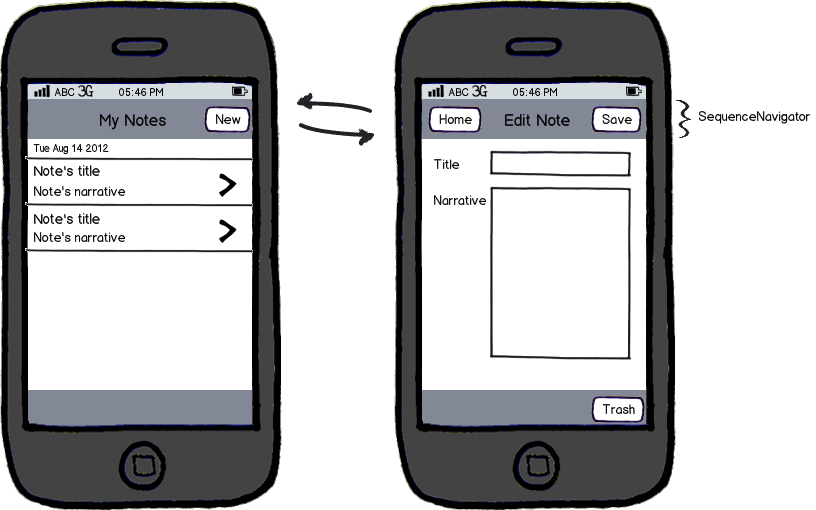
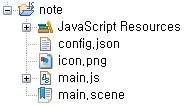
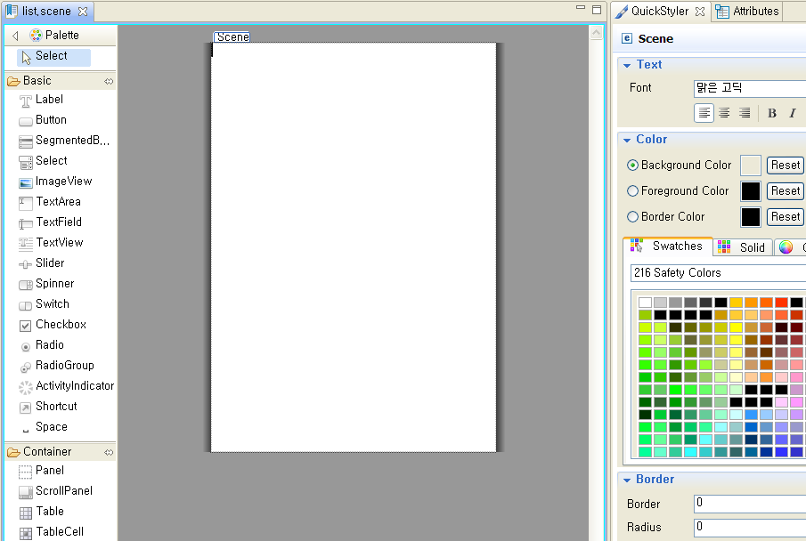

이번 시리즈를 통해 모벨로를 활용한 노트앱을 만들어 보겠습니다. 이 노트앱을 이용해 새로운 노트를 작성할 수 있으며 작성된 노트를 디바이스에 영구적으로 저장할 수도 있습니다. 앞으로 이어질 3번의 시리즈를 통해 다음과 같은 부분들을 설명하고자 합니다.
앱 구현과정을 통해 다음과 같은 기능을 보여드립니다.
처음으로 해야할 작업은 사용자가 새로운 노트를 생성하고 수정할 수 있도록 화면을 생성하는 것입니다. 모벨로에서 제공하는 Form 컴포넌트를 이용하면 아래의 mock-up과 같은 화면을 쉽게 생성할 수 있습니다.

모벨로를 이용하여 화면을 어떻게 디자인 하나구요? 다음의 화면을 먼저 확인하세요

노트작성화면을 위해 Label, TextField, TextArea, ToolBar, Button 컴포넌트를 활용합니다.
노트작성 화면 뿐만 아니라 기존에 작성된 노트 목록을 보여주는 리스트 화면도 필요합니다. 이 노트 리스트 화면은 노트앱의 메인 화면이 되며 노트 에디터화면과 연결됩니다. 다음은 노트리스트 화면을 보여줍니다.

노트 리스트 화면은 다음과 같이 Table 컴포넌트를 이용하여 화면을 구성합니다.

이제 이렇게 만들어진 두 화면을 연결하는 것이 필요합니다. 즉, 리스트 화면에서 작성화면으로 이동하고 다시 리스트 화면으로 이동할 수 있도록 해야 합니다. 개발 생산성을 위해 모벨로에서는 화면이동과 같이 자주 사용되는 기능들을 프레임워크 자체에 내장하고 있습니다. 화면이동을 제어하는 Controller인 SeqeunceNavigator를 이용하면 추가적인 개발 없이도 화면이동(Navigation)을 쉽게 구현할 수 있습니다.

모벨로는 UI를 구성하는 Scene과 이를 제어하기 위한 SceneController로 구성됩니다. 모벨로 스튜디오를 이용하면 WYSIWYG방식으로 화면(Scene)을 디자인할 수 있으며 이렇게 생성된 파일의 확장자는 .scene이 됩니다. SceneController는 이렇게 생성한 Scene파일을 자동으로 로딩하여 화면을 구성하고 화면으로 부터 발생되는 다양한 UI 이벤트를 처리하는 역할을 수행합니다.
모벨로 스튜디오를 이용해 'note'라는 모벨로 어플리케이션 프로젝트를 생성하면 기본적으로 다음과 같은 파일들이 생성됩니다.

위의 파일들 중 main.scene파일을 더블클릭하면 다음의 그림과 같이 디자인 에디터를 이용하여 화면을 디자인할 수 있으며 관련된 Controller로직은 main.js에서 구현합니다.

이제 화면을 디자인하기 위한 준비작업을 모두 마쳤습니다. 지금까지 모벨로를 이용하여 개발하게 될 노트앱에 대한 전반적인 시나리오와 스튜디오를 통해 Scene을 생성하는 방법에 대해 살펴보았습니다. 계속해서 Part2에서는 모벨로 스튜디오를 이용하여 노트앱의 리스트 화면과 작성화면을 디자인하는 방법에 대해 알아보겠습니다.